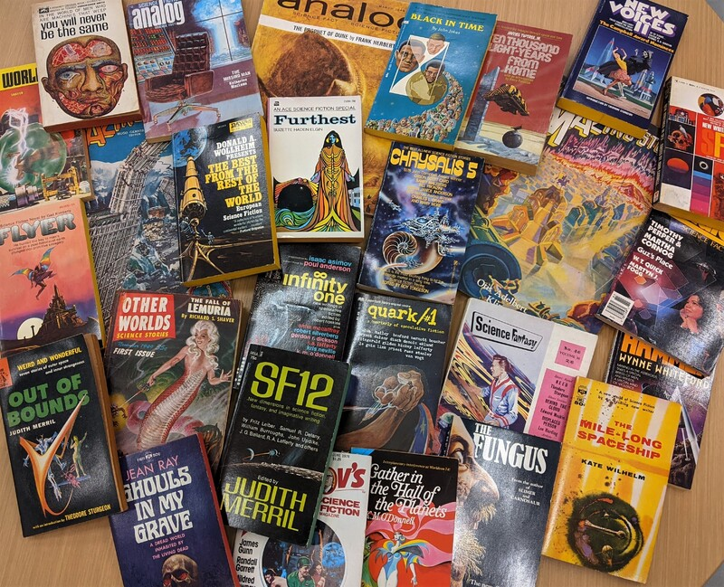

Data
Science Fiction as Data #

Online Databases #
The SF Nexus aspires to make a comprehensive dataset of science fiction literature. At this time, the most valuable web resources include:
- Project Gutenberg
- Internet Archive
- Luminist.org
- HathiTrust
Below, we outline data available from each of these resouces, and describe future plans to develop a combined dataset.
Digitizing SF Archives #
Separately, work is ongoing to digitize old paperbacks and pupl magazines at institutions like Temple University Library. This hub will also help to make those materials available, for example, as derived datasets of extracted features like those available from HathiTrust.
Further effort will be made to share code for analyzing sf data.